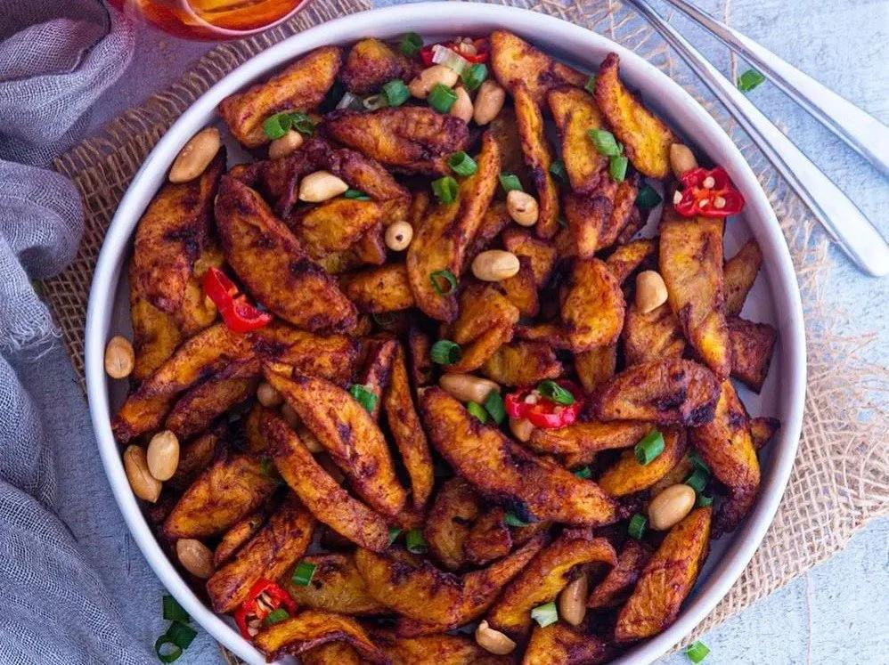

Ghanaian Kelewele

Description
Kelewele is a popular Ghanaian street food made from
ripe plantains seasoned with spices and deep-fried
until golden brown.
It is usually enjoyed as a snack or served with roasted
groundnuts. Its spicy and slightly sweet taste makes
it a favourite among many Ghanaians.
Ingredients
- 3 ripe plantains
- Fresh ginger
- Red pepper
- Garlic
- Salt
- Ground cloves
- Cooking oil for frying
Steps
- Peel the ripe plantains.
- Cut the plantains into small cubes.
- Grind the ginger, garlic, pepper and cloves.
- Mix the spices with the plantain pieces.
- Add a little salt and mix everything together.
- Allow the plantains to marinate for about 10 minutes.
- Heat cooking oil in a frying pan.
- Fry the plantains until golden brown.
- Remove them and drain the excess oil.
- Serve with roasted groundnuts.
Home